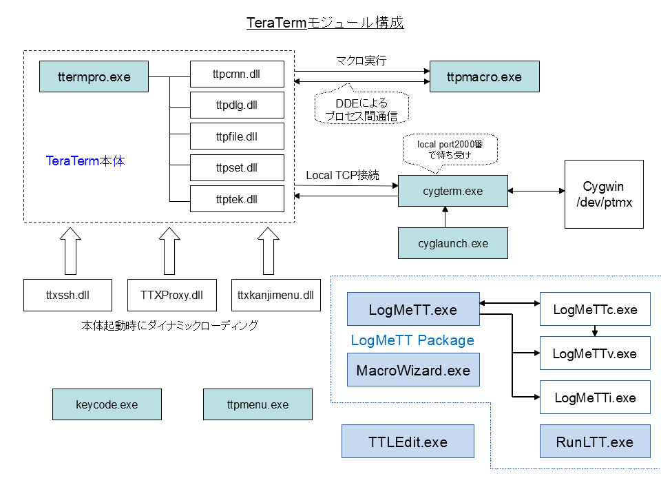
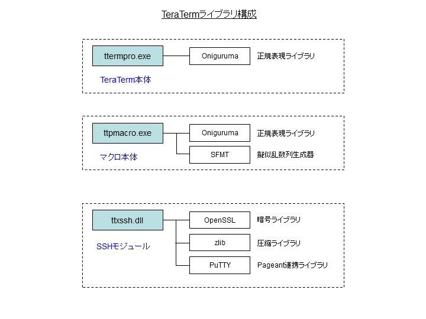
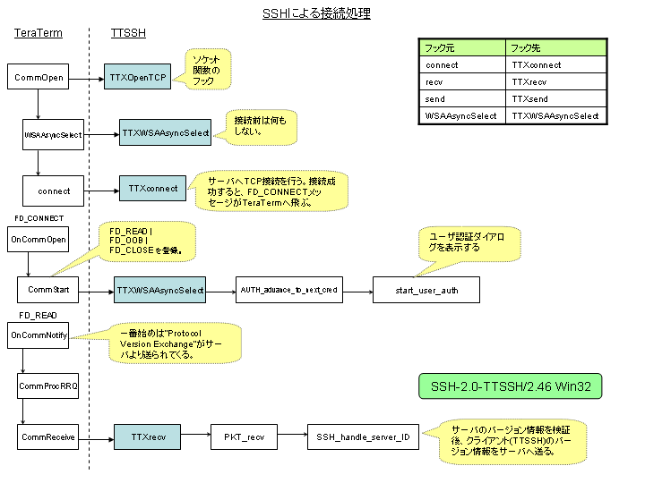
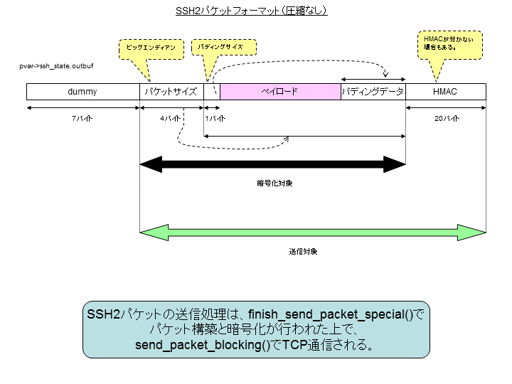
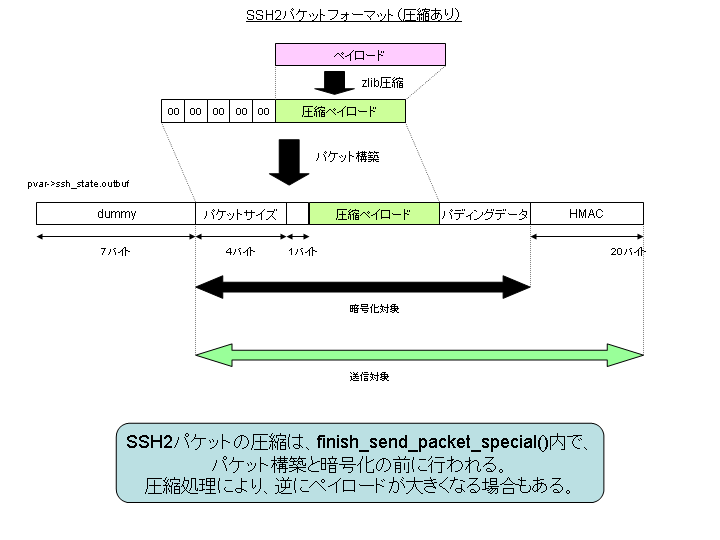
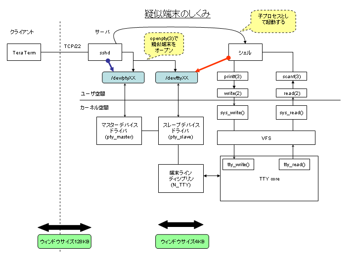

Tera Termソースコード解説
- はじめに
- 必要スキル
- モジュール構成
- ライブラリ構成
- プラグインサポート
- 設定ファイルの読み書き
- セキュアプログラミング
- 古いバージョンのWindowsとの互換性維持
- デバッグ手法
- マルチスレッド
- DDEによるプロセス間通信
- TTSSHによるSSHの設計と実装
- マクロ言語の設計と実装
- キャレット制御
本文書では、Tera Termのソースコードについて解説をします。解説対象とするソースコードはバージョン"4.58"（2008年2月現在）のものをベースとしています。
Tera Termのパッケージに含まれるほとんどのプログラムは、C言語で記述されています。一部のコードはC++言語で、MFC(Microsoft Foundation Class)が利用されています。Windows特有の処理を行うために、Win32 APIが多用されているため、APIの知識が必要となってきます。
ソースコードをビルドするためには、Microsoft Visual Studio 2005 Standard Edition以上が必要です。Express EditionではMFCが利用できないため、ビルドができません。また、C++BuilderやTurbo C++ Explorer、gccなどのコンパイラにおいても、ビルドすることはできません。
Windowsプログラミングに関する情報の源は、Microsoftが提供する「MSDNライブラリ」にあります。開発を行う際は、MSDNライブラリを頻繁に参照することになります。
ただし、CygTermのみはCygwinのgccでコンパイルをします。ゆえに、CygTermはgccの機能を使った実装になっています。言語はC++です。
Tera TermのメインエンジンはC++で実装されていますが、C言語的なコーディングがなされているため、Tera Termのソースコードを読み解くには、C言語に関する基礎知識があれば問題ないと言えます。ただし、Microsoft Visual C++(VC++)はANSI C準拠(C89)とはいえ、C99には未対応であるために、本来のC99相当の機能が独自に拡張されている部分もあります。そうした独自拡張された関数には、頭文字にアンダースコア(_)が付いているために、区別が付けやすくなっています。たとえば、VC++の_snprintf()は、ANSI C(C99)のsnprintf()とは似て非なるものです。
Tera Termパッケージに含まれる実行モジュール（.exeと.dll）の関連図を以下に示します。実行ファイルの拡張子は".exe"になっており、必要に応じてDLLが動的リンクされます。いずれも32ビットプログラム(x86)であるために、x86-64やIA-64といった64ビット環境ではそのまま動作するかどうかは評価されていません。

通常、ユーザがデスクトップやスタートメニューからアプリケーションを起動するときに、呼び出される実行ファイルは"ttermpro.exe"になります。実行ファイルはさらに5つのDLLとダイナミックリンクしています。静的リンクを行い、単一のEXEファイルにしていないのは、1つのプロセスのメモリ占有率を抑えるためです。Tera Termでは多数の起動が行われることが想定されるため、初期設計段階からDLLに分割されています。一度読み込まれたDLLは、複数のプロセス間で共有することができます。
マクロスクリプトを実行する際は、"ttpmacro.exe"というまったく別のプロセスが呼び出されます。"ttermpro.exe"とプロセス単位で分けられているのは、マクロを単体で実行できるようにするためです。両プロセス間で、データのやりとりを行うためには、プロセス間通信が必要です。Tera Termでは、DDE(Dynamic Data Exchange)と呼ばれる現在ではレガシーとなってしまったしくみが採用されています。将来のWindowsではDDEがサポートされなくなる可能性があり、その場合Tera Term上でマクロを実行することは一切できなくなります。
TTSSHやTTProxy、TTXKanjiMenuといったプラグイン形式のDLLは、Tera Termの起動時に明示的に LoadLibrary() を使ってダイナミックロードされます。ロード対象となるDLLのファイル名は、TTXInit()#ttplug.c において、"TTX*.DLL"というパターンにマッチしたものとなります。
"keycode.exe"と"ttpmenu.exe"、"LogMeTT.exe"は単体アプリケーションです。
Cygwin接続のしくみについては、別の節で説明します。
高度な機能を実現するために、フルスクラッチで実装することは効率がいいとは言えません。Tera Termでは開発効率化を図るために、オープンソースのライブラリを積極的に利用しています。ただし、オープンソース製品のライセンスによる競合には注意を払う必要があります（特にGPL）。
下図に、オープンソースのライブラリをリンクしているモジュールと、そのリンク状況を示します。Tera Termマクロプログラムにおいて、"waitregex"や"sprintf"コマンドにおいて正規表現を利用するために、Onigurumaと呼ばれる正規表現ライブラリをリンクしています。Tera Term本体では、バージョンダイアログにOnigurumaのバージョンを表示するためだけにリンクをしています。
SSHモジュールである"TTSSH"は、暗号処理を行うためにOpenSSLを利用しています。"OpenSSL"というネーミングからWebアクセスに使われるSSL(Secure Socket Layer)プロトコル専用のライブラリかと思われがちですが、基本的な暗号アルゴリズムをサポートしていることから、TTSSHではOpenSSLに含まれる低レイヤのルーチンを利用するだけに留まっています。このことは、すなわちOpenSSLライブラリにセキュリティホールが発見されたとしても、TTSSHへの影響は極めて低いということです。
zlibライブラリは、SSHパケットの圧縮を行うために利用しています。ただし、ダイヤルアップ回線などの低速度なネットワークにおいては、パケット圧縮は有効ですが、昨今の高速回線ではむしろ速度低下を招く足かせとなります。ゆえに、デフォルトではパケット圧縮機能は無効化されています。
PuTTYは世界標準であるフリーのターミナルエミュレータです。PuTTYに含まれるPageantと呼ばれるSSH認証エージェントがあるのですが、TTSSHでPageantによる公開鍵認証をサポートするために、PuTTYのソースコードを利用しています。
なお、いずれのライブラリも静的リンク(static link)としています。ライブラリのコンパイルオプションには"/MT"を付加しています。動的リンク(dynamic link)を行うと、一部のユーザ環境でTera Termが起動できないという現象が発生したために、現在では動的リンクは行っていません。

Tera Termでは、DLLという形式でプラグインのしくみをサポートしています。プラグイン形式のDLLファイルを、Tera Termがインストールされているディレクトリへ設置するだけで、Tera Termのソースコードを修正することなく、機能追加を行うことができます。代表的なプラグインとして、TTSSHがあります。
プラグインを作成するためのサンプルコードとして、TTXSamples\ttxtest\ttxtest.c というソースファイルが用意されています。プラグインを開発するときは、このソースファイルをひな形とするとよいでしょう。実践的なプラグインとして、"TTX KanjiMenu"のソースコード（TTXKanjiMenu\配下）がシンプルで分かりやすいです。
プラグインは、Tera Term("ttermpro.exe")の起動時に読み込まれます。TTXInit()#ttplug.c が読み込みを行う関数で、カレントディレクトリから"TTX*.DLL"というワイルドカードに合致するDLLファイルが読み込み対象となります。
複数のDLLが存在する場合は、Tera Term本体からチェインするような形で、各DLLのエクスポート関数が連結されます。連結される順番は、それぞれのDLLが定義するオーダー値（TTXExports構造体のloadOrderメンバ）で決定され、現状下記の通りとなっています。
| モジュール |
オーダー |
| TTProxy |
0 |
| TTSSH |
2500 |
| TTX Kanji Menu |
5000 |
オーダー値が小さいほど、Tera Term本体側に近くなります。たとえば、Tera Term本体からTTXModifyMenu()が呼び出された場合、
- TTXModifyMenu()#ttplug.c → TTProxyのTTXModifyMenu() → TTSSHのTTXModifyMenu() → TTX Kanji MenuのTTXModifyMenu()
という順番で、各DLLの関数が呼び出されていくことになります。
各DLLが、Tera Term本体側から呼び出してもらうためにエクスポートする関数群は、TTXExports構造体で定義し、TTXBind()で渡します。たとえば、TTX Kanji Menuのエクスポート関数は以下のとおりです。不要な関数は NULL で定義してあります。
static TTXExports Exports = {
/* This must contain the size of the structure. See below for its usage. */
sizeof(TTXExports),
/* This is the load order number of this DLL. */
ORDER,
/* Now we just list the functions that we've implemented. */
TTXInit,
NULL, /* TTXGetUIHooks */
NULL, /* TTXGetSetupHooks */
NULL, /* TTXOpenTCP */
NULL, /* TTXCloseTCP */
NULL, /* TTXSetWinSize */
TTXModifyMenu,
TTXModifyPopupMenu,
TTXProcessCommand,
NULL, /* TTXEnd */
NULL /* TTXSetCommandLine */
};
原則、プラグインのエクスポート関数は、他のプラグインと干渉しないように設計をするべきです。また、Tera Term本体側からの呼び出しが、自分宛てであるかどうかを判断する必要がある場合もあります。
プラグインがエクスポートする関数について、以下に示します。
| 関数 |
意味 |
| TTXBind |
一番始めに呼び出される関数であり、エクスポート関数のテーブルを渡す。 |
| TTXInit |
TTXBind()の呼び出し後にすぐに実行される関数で、Tera Term本体のグローバル変数(ts, cv)を受け取り、プラグインの初期化を行う。 |
| TTXGetUIHooks |
ダイアログのハンドルをフックするための関数。Tera Term本体のダイアログインターフェイスを変更したい場合に使う。フック対象の関数は以下のとおり。
&SetupTerminal, &SetupWin, &SetupKeyboard, &SetupSerialPort,
&SetupTCPIP, &GetHostName, &ChangeDirectory, &AboutDialog,
&ChooseFontDlg, &SetupGeneral, &WindowWindow
|
| TTXGetSetupHooks |
セットアップルーチンをフックするための関数。フックした側は、元の関数も責任を持って呼び出す必要がある。複数のプラグインが存在する場合、関数がチェインされていく。フック対象の関数は以下のとおり。
&ReadIniFile, &WriteIniFile, &ReadKeyboardCnf, &CopyHostList,
&AddHostToList, &ParseParam
|
| TTXOpenTCP |
TCP接続を行うときに呼び出される関数。シリアル接続のときは呼び出されない。また、以下のソケットインターフェイスをフックすることもできる。
&Pclosesocket, &Pconnect, &Phtonl, &Phtons, &Pinet_addr,
&Pioctlsocket, &Precv, &Pselect, &Psend, &Psetsockopt,
&Psocket, &PWSAAsyncSelect, &PWSAAsyncGetHostByName,
&PWSACancelAsyncRequest, &PWSAGetLastError
|
| TTXCloseTCP |
TCPコネクションが切断されるときに呼び出される関数。シリアル接続のときは呼び出されない。下記のうちフックしたインターフェイスがあるならば、元に戻す必要がある。
&Pclosesocket, &Pconnect, &Phtonl, &Phtons, &Pinet_addr,
&Pioctlsocket, &Precv, &Pselect, &Psend, &Psetsockopt,
&Psocket, &PWSAAsyncSelect, &PWSAAsyncGetHostByName,
&PWSACancelAsyncRequest, &PWSAGetLastError
|
| TTXSetWinSize |
Tera Termウィンドウの画面サイズが変更されたときに呼び出される関数。 |
| TTXModifyMenu |
Tera Termのメニューが初期化されるときに呼び出される関数。プラグイン用のメニューを挿入したい場合に使われる。
|
| TTXModifyPopupMenu |
Tera Termのポップアップメニューが初期化されるときに呼び出される関数。プラグイン用のポップアップメニューを挿入したい場合に使われる。 |
| TTXProcessCommand |
メニューが呼び出されたときに実行される関数。プラグイン用のメニューを処理したいときに使われる。
|
| TTXEnd |
Tera Term本体が終了するときに呼び出される関数。 |
| TTXSetCommandLine |
新規接続やセッションの複製を行うときに、コマンドラインパラメータの処理を行うときに呼び出される関数。プラグイン独自のオプションを追加したときは、ここで処理される。
|
Windowsではアプリケーションのデータ保存のために、レジストリが伝統的に利用されていますが、Tera Termではその誕生がWindows 3.1までに遡るために、.iniファイルによるローカルディレクトリへの保存方法が標準となっています。
パッケージに同梱されるCollectorやLogMeTT、CygTermに関してもローカルディレクトリへデータが保存されます。
例外として、TeraTerm Menuはデフォルトでレジストリへ保存をします。カレントディレクトリに"ttpmenu.ini"（0バイトで可）を設置することで、レジストリの代わりに.iniファイルを使うようにすることもできます。
teraterm.iniファイルにエントリを追加した場合は、ReadIniFile()#ttset.cに設定を読み込みするようにします。
ts->ConfirmChangePaste =
GetOnOff(Section, "ConfirmChangePaste", FName, TRUE);
WriteIniFile()#ttset.c に設定を書き込みするようにします。
WriteOnOff(Section, "ConfirmChangePaste", FName,
ts->ConfirmChangePaste);
エントリに文字列を設定する場合は、Win32APIのGetPrivateProfileString()とWritePrivateProfileString()を使います。数値を扱いたい場合は、GetPrivateProfileInt()とWriteInt()を使います。
WindowsのデフォルトアカウントはAdministrator権限を保持するために（ただし、Windows Vistaには当てはまらない）、アプリケーションにバッファオーバーフローの不具合があると、管理者権限を第三者に奪取されてしまう危険性があります。
従来、C言語の文字列処理は開発者のミスにより、バッファオーバーフローが発生しやすいという状況にありました。そこで、MicrosoftはVisual Studio 2005から文字列処理関数のセキュリティ強化バージョンを提供するようになりました。
Tera Termではセキュリティ強化を図るため、文字列操作のほとんどをセキュリティ強化バージョンに置き換えています。以下に代替関数を示します。
| 旧 |
新 |
| sprintf(), _snprintf() |
_snprintf_s() |
| strcat(), strncat() |
strncat_s() |
| strcpy(), strncpy() |
strncpy_s() |
デフォルトのロケールが適用されると、期待する動作とならないケースにおいては、_snprintf_s_l()を使用しています。
いずれの関数においても、_s("secure")という接尾辞が付くため、見た目に区別が付きやすくなっています。当然のことながら、これらの関数はANSI C非互換です。
なお、これらの関数を利用する際、Count引数（格納する最大文字数）には"_TRUNCATE"マクロを指定しており、バッファオーバーフローが発生する場合は、強制的にバッファの切り詰めを行っています。
Windowsのアプリケーションプログラムは、単一のバイナリファイルを変更することなく、新旧のバージョンのWindows上で起動できるようにするためには、アプリケーションプログラム側での工夫が必要です。
たとえば、Windows2000で導入された SetLayeredWindowAttributes() APIを直接呼び出すと、WindowsNT4.0や98などではアプリケーションの起動に失敗するようになります。そのため、新しいAPIを呼び出すときは、LoadLibrary()を使って動的ロードするようにします。
static BOOL MySetLayeredWindowAttributes(HWND hwnd, COLORREF crKey, BYTE bAlpha, DWORD dwFlags)
{
typedef BOOL (WINAPI *func)(HWND,COLORREF,BYTE,DWORD);
static HMODULE g_hmodUser32 = NULL;
static func g_pSetLayeredWindowAttributes = NULL;
if (g_hmodUser32 == NULL) {
g_hmodUser32 = LoadLibrary("user32.dll");
if (g_hmodUser32 == NULL)
return FALSE;
g_pSetLayeredWindowAttributes =
(func)GetProcAddress(g_hmodUser32, "SetLayeredWindowAttributes");
}
if (g_pSetLayeredWindowAttributes == NULL)
return FALSE;
return g_pSetLayeredWindowAttributes(hwnd, crKey,
bAlpha, dwFlags);
}
いちいち、手で関数プロトタイプを書いていくのは面倒である場合は、「DLLの遅延読み込み」というしくみを利用すると、上記のような手順は不要です。いきなり、関数を呼び出すことができます。ダイレクトに呼び出したい関数がある場合、それが古いWindowsではサポートされていないものであるならば、Visual Studioのプロジェクト設定で、「DLLの遅延読み込み」に該当するDLLを指定しておきます。
debug printf
Windowsアプリケーションでは printf() が使えません。標準出力がどこにも割り当てられていないからです。AllocConsole()とfreopen()を使えば、Windowsアプリケーションにおいても printf() を利用することができます。
OutputDebugString()というAPIがあります。これは Visual Studio のデバッグコンソールにメッセージ出力することができる関数です。当該APIは、"Debug build"および"Release build"に関係なく、デバッガが存在すれば、メッセージを送信します。ゆえに、 Visual Studioがなくとも、DBConのようなツールを使えば、アプリケーションの単体起動においても、OutputDebugString()によるメッセージを拾うことができます。
Tera Termでは、可変長引数を扱えるようにラッパー関数を用意しています。
void OutputDebugPrintf(char *fmt, ...) {
char tmp[1024];
va_list arg;
va_start(arg, fmt);
_vsnprintf(tmp, sizeof(tmp), fmt, arg);
OutputDebugString(tmp);
}
memory leak
malloc()等による確保したヒープメモリの解放し忘れによる「メモリリーク」を、自動で検出するしくみが Visual Studio には用意されています。プログラムの起動時に、以下のコードを挿入するだけです。プログラムの終了時に、解放していないヒープメモリがあれば、 Visual Studio の「出力」ウィンドウにリストアップされます。
#ifdef _DEBUG
_CrtSetDbgFlag(_CRTDBG_ALLOC_MEM_DF | _CRTDBG_LEAK_CHECK_DF);
#endif
なお、Windowsのように仮想記憶で動くアプリケーションプログラムに関しては、プログラムの終了時に解放されていないメモリが存在した場合、OSが面倒を見て、メモリが解放されるようになっています。
Windowsのアプリケーションはマルチスレッドで設計されることがほとんどですが、Windows 3.1から95の時代ではあまり一般的ではありませんでした。そのため、元々Tera Termはマルチスレッド化されていません。ソースコードを見ると分かるように、グローバル変数が多用されているため、ほとんどの処理がスレッドセーフではありません。
ただし、一部の処理においては _beginthreadex() API を使ってスレッドが生成されています。以下にスレッド生成箇所を示します。
Tera Term
| 生成箇所 |
ソースファイル |
| シリアル接続 |
CommStart()#commlib.c |
| TELNETキープアライブ |
TelStartKeepAliveThread()#telnet.c |
| IPv4/v6ソケットの生成 |
WSAAsyncGetAddrInfo()#WSAAsyncGetAddrInfo.c |
TTSSH
| 生成箇所 |
ソースファイル |
| SSHキープアライブ |
start_ssh_heartbeat_thread()#ssh.c |
| SCP送信処理 |
SSH2_scp_tolocal()#ssh.c |
| SCP受信処理 |
SSH2_scp_fromremote()#ssh.c |
すでに説明したとおり、Tera Term（TTSSH含む）の内部処理はスレッドセーフではないため、シンプルにスレッドを生成し、スレッド内から送受信処理等を行おうとすると、不具合が発生してしまいます。
TELNETやSSHのキープアライブ（ハートビート）処理を実現するためには、定期的にパケットの送信処理を行う必要があります。また、SCPによるファイル送受信を行う際においても、ファイルの送信処理中に、ユーザの端末操作のレスポンスを落とさないために、スレッドの使用が不可欠です。
そこで、マルチスレッドを使う場合は、モードレスダイアログを非表示で作成したあとに、_beginthreadex() APIでスレッドを生成し、実際の処理はモードレスダイアログに行わせるという手段を使用しています。このしくみにより、マルチスレッドを使いながら、スレッドセーフを保つことができます。以下に、コード例を示します。
#define WM_SEND_HEARTBEAT (WM_USER + 1)
static LRESULT CALLBACK telnet_heartbeat_dlg_proc(HWND hWnd, UINT msg, WPARAM wp, LPARAM lp)
{
switch (msg) {
case WM_INITDIALOG:
return FALSE;
case WM_SEND_HEARTBEAT:
TelSendNOP();
return TRUE;
break;
case WM_COMMAND:
break;
case WM_CLOSE:
return TRUE;
case WM_DESTROY:
return TRUE;
default:
return FALSE;
}
return TRUE;
}
static unsigned _stdcall TelKeepAliveThread(void *dummy) {
static int instance = 0;
if (instance > 0)
return 0;
instance++;
while (cv.Open && nop_interval > 0) {
if (time(NULL) >= cv.LastSendTime + nop_interval) {
SendMessage(keepalive_dialog, WM_SEND_HEARTBEAT, 0, 0);
}
Sleep(100);
}
instance--;
return 0;
}
void TelStartKeepAliveThread() {
unsigned tid;
if (ts.TelKeepAliveInterval > 0) {
nop_interval = ts.TelKeepAliveInterval;
keepalive_dialog = CreateDialog(hInst, MAKEINTRESOURCE(IDD_BROADCAST_DIALOG),
HVTWin, (DLGPROC)telnet_heartbeat_dlg_proc);
keepalive_thread = (HANDLE)_beginthreadex(NULL, 0, TelKeepAliveThread, NULL, 0, &tid);
if (keepalive_thread == (HANDLE)-1) {
nop_interval = 0;
}
}
}
概要
DDE(Dynamic Data Exchange)の誕生は、1987年のWindows 2.0までに遡ります。DDEはプロセス間通信を行うためのしくみですが、現在ではレガシーな方式であり、ほとんどのアプリケーションでは利用されていません。Windowsにおけるプロセス間通信といえば、メールスロットや名前付きパイプ、OLEなどが定番です。
かつては、DDEによるプロセス間の通信データをキャプチャすることができる「DDEスパイ」(DDESPY.EXE)というツールがVisual Studioに付属していましたが、現在のVisual Studioにはもはや含まれていません。
DDEに関するリファレンスはMSDNライブラリから参照することができます。
DDEは、TCPによるネットワーク通信と似ており、サーバとクライアント間を一対一で接続し、通信を行います。アプリケーションがDDEによる通信を行うために、DDEML(Dynamic Data Exchange Management Library)と呼ばれるライブラリをWin32 APIとして提供されています。
DDE通信を行うために、一方がサーバとなり、他方がクライアントになる必要があります。また、通信のセッションをシステム全体でユニークとするために、識別情報が必要です。TCP通信ではIPアドレスとポート番号が使われますが、DDE通信では「サービス名」と「トピック名」の組み合わせが使われます。Tera Termではサービス名は"TERATERM"という文字列が使われ、トピック名はTera Term本体のウィンドウハンドル(HVTWin)の16進数値を文字列化したものが使われています。
このようなしくみになっているために、マクロスクリプトからまったく別のTera Termへコマンドを送ることはできません。
上図に示すように、Tera Term本体("ttermpro.exe")がDDEサーバとなり、マクロプログラム("ttpmacro.exe")がDDEクライアントとなります。DDEでは、やりとりするデータの塊のことを「トランザクション」と呼びます。トランザクションには以下に示すような何種類かがあります。タイプは"ddeml.h"でマクロ定義されています。
| タイプ |
意味 |
| XTYP_ADVREQ |
DDEサーバがクライアントへデータを送るために、DDEサーバが自分自身に送るメッセージ。 |
| XTYP_POKE |
DDEクライアントからサーバへデータを送る。 |
| XTYP_ADVSTART |
DDEサーバに対してアドバイズループの開始を指示する。 |
| XTYP_ADVDATA |
DDEクライアントにデータを定期的に送る。 |
| XTYP_EXECUTE |
DDEサーバに文字列を送り、何らかの処理をサーバに指示する。 |
DDE通信の特徴として、アドバイズループ(advise loop)という概念があります。DDEサーバがアドバイズループに入ると、クライアントはサーバから定期的にデータを受け取り続けることができます。Tera Termでは、リモートホストからの受信データを、マクロプログラムへ渡すために、アドバイズループが使われています。
ライブラリ
Tera Termで使われているDDEMLについて、以下に示します。
| 関数名 |
機能 |
| DdeInitialize |
DDEを初期化し、コールバック関数を登録する。初期化できるとインスタンスを返す。 |
| DdeCreateStringHandle |
文字列リテラルからハンドルを作成する。ハンドルはサーバとクライアントの通信用に使われる。 |
| DdeNameService |
インスタンスとサービス名("TERATERM")をサーバに登録する。登録後、XTYP_REGISTERトランザクションがクライアントへ送られる。登録解除する際にも使われる。 |
| DdeCmpStringHandles |
2つの文字列ハンドルを比較する。 |
| DdeClientTransaction |
クライアントからサーバへトランザクションを送ることができる。トランザクションタイプとして、XTYP_REQUEST・XTYP_EXECUTE・XTYP_ADVSTART・XTYP_POKEなどが指定できる。サーバからのACKを待つまでのタイムアウト時間を指定することができ、Tera Termではほとんど"1000ミリ秒（1秒）"が指定されている。ただし、ACKを確認するケースにおいては"5000ミリ秒（5秒）"が指定されている。 |
| DdeAccessData |
DDEハンドルから実際のデータへのポインタを取得する。データの取り出しが終わったら、DdeUnaccessData()を呼び出すこと。 |
| DdeCreateDataHandle |
DDEオブジェクトを作成し、ハンドルを返す。DDEサーバのアドバイズループや、XTYP_REQUESTトランザクション受信時に、DDEクライアントへデータを送るために使われている。 |
| DdeGetData |
DDEオブジェクトからバッファへコピーする。 |
| DdeDisconnect |
DDE通信を終了する |
| DdePostAdvise |
DDEサーバ側で使われる関数で、自分自身に XTYP_ADVREQ トランザクションを送る。 |
実装
DDEサーバ側の実装について見ていきます。Tera Term本体("ttermpro.exe")がDDEサーバとなり、かならずDDEサーバから起動されます。マクロプログラム("ttpmacro.exe")から直接マクロスクリプトが実行されるケースにおいても、"connect"マクロによりDDE接続をしないと、通信が開始できません。
Tera TermのControlメニューからMacroを呼び出した場合、RunMacro()#ttdde.c がコールされます。
HVTWinウィンドウハンドルからトピック名（8バイト）を作成し、DDEの初期化とサーバの登録を行います。また、このタイミングでDDEバッファ（1KB）を作成しています。その後、"ttpmacro.exe"を /D= オプションでトピック名を渡しつつ、起動をします。
SetTopic();
if (! InitDDE()) return;
strncpy_s(Cmnd, sizeof(Cmnd),"TTPMACRO /D=", _TRUNCATE);
strncat_s(Cmnd,sizeof(Cmnd),TopicName,_TRUNCATE);
DDEサーバに、DDEクライアントからトランザクションが送られてきたときは、DdeCallbackProcコールバック関数が呼び出されます。コールバック関数は、DdeInitialize()でDDEの初期化を行うときに登録されます。
次に、DDEクライアントについて見てみましょう。マクロプログラムの起動時、InitDDE()#ttmdde.c が呼び出され、DDEクライアントとして初期化が行われます。DDEの初期化は、DdeInitialize()で行われ、同時にDdeCallbackProcコールバック関数が登録されます。DDEサーバから届いたトランザクションは、コールバック関数で処理されます。
DDE通信を始めるためには、DdeConnect()を呼び出し、サーバと接続する必要があります。次に、"ttpmacro.exe"のウィンドウハンドル(HWin)をサーバへ通知するために、XTYP_EXECUTEトランザクションで送ります。最後に、XTYP_ADVSTARTトランザクションをサーバへ送り、アドバイズループを開始します。
ConvH = DdeConnect(Inst, Service, Topic, NULL);
if (ConvH == 0) return FALSE;
Linked = TRUE;
Cmd[0] = CmdSetHWnd;
w = HIWORD(HWin);
Word2HexStr(w,&(Cmd[1]));
w = LOWORD(HWin);
Word2HexStr(w,&(Cmd[5]));
DdeClientTransaction(Cmd,strlen(Cmd)+1,ConvH,0,
CF_OEMTEXT,XTYP_EXECUTE,1000,NULL);
DdeClientTransaction(NULL,0,ConvH,Item,
CF_OEMTEXT,XTYP_ADVSTART,1000,NULL);
バッファの管理
マクロプログラムでは"wait"コマンド等で、リモートホストから送られてきたデータを監視するための機能が用意されています。この機能を実現するためには、Tera Term本体とマクロプログラムのそれぞれにおいて、バッファを用意する必要があり、プロセス間通信（DDEトランザクション）により、Tera Term本体からマクロプログラムへリモートホストからの受信データを送らなければなりません。
まず、Tera Term本体におけるリモートホストからのTCPパケット受信は、アイドルループ OnIdle()#teraterm.cpp にて行われます。OnIdle()から呼び出される CommReceive()#commlib.c において、TCPパケットデータをバッファ(cv->InBuff[])に格納します。このバッファは 1KB の大きさを持ちます。また、リングバッファではないため、バッファフルになった場合は、TCPパケットの受信をしません。ただし、バッファフル状態が長く続くと、Windowsカーネル内にTCPパケットが溜まっていき、いずれはリモートホストからのパケットを受信できなくなる可能性があります。
エスケープシーケンスの解析処理を行う過程で、「ログ採取」か「マクロ実行」を行っている場合は、LogPut1()が呼び出され、DDEバッファ(cv.LogBuf[])へ受信データが格納されます。すなわち、ログ採取とマクロ実行におけるバッファは共通です。このバッファは1KBの大きさを持つリングバッファであり、バッファフルになった場合は、最古のデータから上書きされてゆきます。
なお、バイナリモードでログ採取においては、cv.BinBuf[] という別のバッファへデータが格納されますので、DDEバッファとは別物です。言い換えると、バイナリモードにおけるデータをDDE通信させることはできないということです。単純な"wait"コマンドでは、バイナリデータ（制御コードなど）を待つことはできません。
Tera Term本体のDDEバッファのデータは、エスケープシーケンスの解析処理が完了後、DDEAdv()#ttdde.c がすぐに呼び出され、自分自身（DDEサーバ）へ XTYP_ADVREQ トランザクションを送ります。XTYP_ADVREQを受け取ったら、DDEコールバック関数 DdeCallbackProc() が呼び出され、マクロプログラムへのデータ送信を行います。ここでアドバイズループが使われています。
アドバイズループによりDDEサーバよりデータが送られてくると、DDEクライアントであるマクロプログラムにおいては、XTYP_ADVDATAトランザクションがDDEコールバック関数 DdeCallbackProc()#ttmdde.c により処理されます。
なお、Tera Term本体において、DDE通信用のバッファと、ログ採取用のバッファは cv.LogBuf[] で共有されています。バッファの先頭とデータサイズを表すインデックスは、DDE通信の場合は"DStart"と"Dcount"、ログ採取の場合は"LStart"と"Lcount"と区別されています。実際には、1つのバッファを共有しているわけなので、それぞれのインデックスが食い違うと、誤動作する原因となるため、常に同期を取っておくことになります。
概要
オリジナルのTTSSHはRobert O'Callahan氏（現在はMozilla hackerとして活躍）により開発されたプラグインです。SSH1へ対応しており、ポートフォワーディングやzlibによるパケット圧縮もサポートしていました。TTSSHは、Tera Termをセキュア通信に対応させるためのプラグインであったために、SCPやSFTP等には未対応でした。オリジナルTera Termが1998年に開発凍結後も、2001年ごろまでメンテナンスが続けられていました。
TTSSHのSSH2対応を実現するために、TeraTerm Projectにより2004年から設計と実装が始められました。3年の歳月をかけて、ほぼSSH2プロトコルのフルサポートを実現しました。現在ではSCPへも対応しています。将来的にはSFTPへも対応されるかもしれません。
原則、TTSSHの実装はOpenSSHを参考にしています。一部、コードをそのまま流用しているところもあります。ただし、OpenSSHはUNIXのコマンドライン向けに設計されているため、Tera TermのようなWindowsアプリケーションにはそのまま適合しない箇所も多く、フレームワークとしてはOpenSSHと大きく異なったものとなっています。
SSHプロトコル
SSH(Secure Shell)は、バージョン1（厳密には1.5）とバージョン2が存在し、略して"SSH1"および"SSH2"と呼ばれます。それらのバージョン間にはプロトコル仕様としての互換性はありません。SSH1にはセキュリティ上の問題があるために、現在はほとんど利用されません。
SSH2プロトコルの仕様に関しては、RFC化されています。
接続処理
TTSSHは、Tera Termの一部のコードでもあるため、ネットワーク接続処理はTera TermとTTSSHの間を行き来することになり、処理の流れが複雑になっています。また、SSHプロトコルそのもののフローを熟知していないと、TTSSHのシーケンスを追っていくのが難しくなっています。以下に、リモートホストへの接続を行うまでのフローを示します。

送信パケット処理
SSH2プロトコルに載せて、パケットをサーバへ送るときのコードは以下のような書き方となります。begin_send_packet()の呼び出しで、「pvar->ssh_state.outbuf + 12」が返り値となり、それがペイロードを表します。ペイロードは純粋にサーバへ送りたいデータのことで、サイズやパディング等を含みません。
buffer_t *msg;
int len;
char *s;
unsigned char *outmsg;
msg = buffer_init();
if (msg != NULL) {
buffer_put_int(msg, SSH2_DISCONNECT_PROTOCOL_ERROR);
s = "disconnected by server request";
buffer_put_string(msg, s, strlen(s));
s = "";
buffer_put_string(msg, s, strlen(s));
len = buffer_len(msg);
outmsg = begin_send_packet(pvar, SSH2_MSG_DISCONNECT, len);
memcpy(outmsg, buffer_ptr(msg), len);
finish_send_packet(pvar);
buffer_free(msg);
}
SSH通信に載せられて、実際にパケットが送出されるのは、finish_send_packet()から呼び出される finish_send_packet_special() です。パケットを送信するときのフォーマットについて、以下に示します。共通鍵暗号でパケットデータを暗号化する前に、ヘッダとフッタを付ける必要があります。
パケットサイズはHMACを除く長さです。パケットサイズそのものはビッグエンディアン形式で、4バイト分格納しますが、その"4"バイトは含まれません。ペイロードの直後にパディングを埋めるのは、共通鍵暗号で暗号化するときに「ブロックサイズ単位」になっていなければ、アルゴリズム的に暗号化できないからです。ブロックサイズは暗号アルゴリズムにより異なり、たとえば3DES-CBCならば24バイト、AES128ならば16バイトです。
HMAC(Keyed-Hashing for Message Authentication)は、暗号化本文に対するハッシュです。ハッシュのアルゴリズムは選択可能であり、"MD5"や"SHA-1"がよく使われています。HMACを付加することにより、「第三者によるデータの改ざん」を検出することができます。HMACは、暗号化対象となる本文を秘密鍵とシーケンス番号を加え、ハッシュ値を計算します。秘密鍵とシーケンス番号を加えることにより、第三者がデータをまるごと差し替えたとしても、送信者が生成したハッシュ値を復元することは理論上できません。

zlibによるパケット圧縮を行う場合における、パケットを送信するときのフォーマットについて、以下に示します。パケット圧縮を行うのは、「ペイロード」の部分のみで、残りは通常の送信パケットとフォーマットは同じです。なお、パケットを圧縮したとしても、かならずしも元のサイズよりも小さくなるとは限らないので、そのことを考慮したバッファ管理が必要です。
パケット圧縮送信で難しいのは、圧縮を開始するタイミングです。ローカルホストからリモートホストへのSSH接続を開始すると、実にたくさんのネゴシエーションが行われますが、パケットを圧縮してよいのは決められたタイミングであり、このタイミングを間違えると、サーバとまったく通信ができなくなります。
通常のパケット圧縮の場合は、"SSH2_MSG_KEXINIT"を受信したタイミングです。遅延パケット圧縮の場合は、ユーザ認証が成功したタイミング（"SSH2_MSG_USERAUTH_SUCCESS"を受信した時）です。遅延パケット圧縮というのは、それまで"SSH2_MSG_KEXINIT"を受信したタイミングで圧縮を開始していたのを、ユーザ認証が完了するまで延長する方式です。遅延パケット圧縮は、zlibライブラリのセキュリティホールにより、不正なSSHサーバへ接続しただけで、クライアント側に影響が出るのを回避するためのしくみです。

受信パケット処理
パケットの受信は、TeraTerm本体側からは recv ソケット関数を呼び出した場合に、それがTELNETなのかSSHなのかを意識させないような設計になっていることと、 recv ソケット関数の呼び出しでは、かならずしも十分なバッファサイズが指定されてくるとは限らないため、少々実装が複雑になっています。
TeraTerm本体側は OnIdle()#teraterm.cpp というアイドルループにおいて、常時パケットの受信がないかをポーリングしています。それが CommReceive() で、recv()を呼び出します。recv()はTTSSHによりフックされているので、ソケット関数ではなく、TTXrecv()#ttxssh.c が呼び出されます。
CommReceive()は recv() を呼び出す際に、バッファ(cv->InBuff[])の空きポインタとサイズを引数に渡します。バッファサイズは 1KB です。つまり、TTXrecv()のサイズには、1〜1024 までの数値が渡される可能性があるということです。
TTXrecv()から呼び出される PKT_recv() は、少々複雑なループ処理となっています。SSH接続を初めて行うときのシーケンスを以下に示します。
- recv_data() で本当の recv() を呼び出し、サーバからの受信パケットをカーネルから受け取る。pvar->pkt_state.datalenが更新される。
- SSH_handle_server_ID() でSSHサーバのバージョンチェックが行われる。pvar->pkt_state.datastart と pvar->pkt_state.datalen を更新する。
- 再度、recv_data() が呼ばれるが、サーバからの受信データがもうないので、connection_closed=TRUE として while ループを抜ける。
- TeraTermの recv() は"0"で返ってくる。すなわち、受信データなし。
次に、SSH通信のための共通鍵生成までのシーケンスを以下に示します。
- recv_data() で本当の recv() を呼び出し、サーバからの受信パケットをカーネルから受け取る。pvar->pkt_state.datalenが更新される。
- SSH_predecrpyt_packet() で、受信パケットの先頭ブロックのみを復号化する。SSHパケットのサイズを取得する。
- 妥当なSSHパケットサイズならば、SSH_handle_packet() を呼び出し、メッセージタイプに応じたハンドラを呼び出す。pvar->ssh_state.payload と pvar->ssh_state.payloadlen を設定する。
- pvar->pkt_state.datastart と pvar->pkt_state.datalen を更新する。
- pvar->pkt_state.datalen がゼロになるまで、SSH_predecrpyt_packet() の処理を繰り返す。
- recv_data() が呼ばれるが、サーバからの受信データがもうないので、connection_closed=TRUE として while ループを抜ける。
- TeraTermの recv() は"0"で返ってくる。すなわち、受信データなし。
次に、端末データ通信のシーケンスを以下に示します。
- recv_data() で本当の recv() を呼び出し、サーバからの受信パケットをカーネルから受け取る。pvar->pkt_state.datalenが更新される。
- SSH_predecrpyt_packet() で、受信パケットの先頭ブロックのみを復号化する。SSHパケットのサイズを取得する。
- 妥当なSSHパケットサイズならば、SSH_handle_packet() を呼び出し、メッセージタイプに応じたハンドラを呼び出す。pvar->ssh_state.payload と pvar->ssh_state.payloadlen を設定する。
- メッセージタイプがSSH2_MSG_CHANNEL_DATAなので、handle_SSH2_channel_data() を呼び出す。pvar->ssh_state.payload_datalen と pvar->ssh_state.payload_datastart を設定する。
- pvar->pkt_state.datastart と pvar->pkt_state.datalen を更新する。
- SSH_is_any_payload() が真を返すようになり、PKT_recv()に渡されてきたバッファへデータをコピーする。
- TeraTerm側のバッファサイズがいっぱいになった場合は、SSH端末データが残っていたとしても、PKT_recv()は返る。
- TeraTerm側のバッファサイズに余裕がある場合は、recv_data()を呼び出し、サーバからの受信データを取得する。
- TeraTermの recv() は「受信データサイズ」で返ってくる。
シーケンス制御
SSH2接続を行うことで、通信経路を暗号化することができるのが特徴ですが、パケットの暗号化を行うためには、「鍵」が必要です。通信経路の暗号化には、共通鍵による共通鍵暗号が利用されます。公開鍵暗号のほうがセキュリティ強度は高いのですが、暗号処理に多大な時間がかかるため、SSHのような通信性能が要求されるしくみでは採用されません。SSH2では、共通鍵暗号アルゴリズムとして、AES(Advanced Encryption Standard：Rijndaelアルゴリズム)や3DES(Triple DES)などが利用されます。
共通鍵は通信を行う二者間でのみに共有される情報であり、第三者に知られてはなりません。SSH2では、クライアントがリモートホスト（SSHサーバ）へTCP接続した時に、"Diffie-Hellman"アルゴリズムをベースとした独自の方式により、クライアントとサーバでしか知り得ないDH(Diffie-Hellman)鍵を生成します。DH鍵生成までの過程は、ネットワーク上をパケットが平文で流れるため、第三者によるパケットキャプチャが可能となっていますが、パケットを覗かれても、DH鍵は理論上第三者には分からないようになっています。
共通鍵が生成できたあとは、その鍵を使ってパケットを暗号化します。SSH2では、送受信されるパケットは種類があるため、それぞれに「メッセージ番号」を割り振っています。RFC4250にメッセージ番号の一覧があります。メッセージ名は"SSH2_MSG_xxxx"というネーミングになっており、TTSSH内部でも同じ名前でマクロ定義しています。
以下に、クライアントからサーバへTCP接続（ポート22番）してから、パスワード認証でユーザ認証されるまでの流れを示します。
以下は、リモートホストのシェル上で"exit"や"logout"として、クライアントから明示的にシェルをクローズするときの、パケットの流れを示しています。
TTSSHは、SSH2でパスワード認証のほかにkeyboard-interactive認証、publickey認証、Pageantを利用したpublickey認証をサポートしています。それぞれの認証方式でどのようなシーケンスで認証が行われるのか、以下に示します。
疑似端末のしくみ
SSH2では、新しく「フロー制御」という概念が取り込まれています。TCPのウィンドウと同じ考え方で、「ウィンドウサイズ」というしくみを導入しています。この機能により、クライアント（Tera Term）とサーバ（SSHデーモン）間において、フロー制御が働くため、原則データが溢れることはありません。
ところで、SSH2におけるフロー制御があるにも関わらず、大量のクリップボードをTeraTermの端末へペーストすると、サーバ側での「データの取りこぼし」が発生することがあります。この現象を理解するためには、UNIXにおける疑似端末（PTY: pseudo-terminal）の動作原理を知る必要があります。

SSHデーモン(sshd)はクライアントに対して、あたかもサーバ側のシェルが直接接続されているかのように見せる必要があります。逆に、シェル上で動くプログラムは、文字を送りたいときは printf(3) を、文字を受け取りたい場合は scanf(3) といったCライブラリ関数を呼び出すだけでよく、その先がシリアルコンソールなのか、VGAコンソールなのか、SSH接続されているのかは、一切気にしなくてよいようになっています。
sshdは、クライアントからの接続要求があったタイミングで、openpty(3)を使って、疑似端末の初期化を行います。疑似端末では、カーネル空間でクライアントとサーバをつなぐために、「マスターデバイスドライバ」と「スレーブデバイスドライバ」が用意されます。マスターデバイスドライバが担当するデバイスファイルは"/dev/ptyXX"、スレーブデバイスドライバでは"/dev/ttyXX"です。つまり、sshdはマスターデバイスドライバへアクセスすることで、シェルとお話をすることができます。シェルは、sshdからforkされて子プロセスとなり、親プロセス(sshd)が初期化済みのスレーブデバイスドライバとお話をすることになります。この疑似端末のしくみにより、sshdとシェルが接続されます。
なお、端末ラインディシプリン(line discipline: 回線規約)というのは、たとえばプログラムが getchar() を呼び出したときに、Enterキーを押下するまで、プログラムに制御が渡りません。端末ラインディシプリンは、プログラム実行中での「行内編集」を可能とするためのモジュールです。Linuxでは、端末ラインディシプリンは /proc/tty/ldiscs で確認できます（N_TTYが標準的に利用される）。
概要
Tera Termのマクロスクリプトは、BASIC風の言語仕様となっています。BisonやFlexといったしくみは利用しておらず、力業的な独自の構文解析（再帰的下降法）により実装されています。そのため、本格的なスクリプト言語としての記述はできない側面があります。
ファイルの読み込み
ttpmacro.exeの起動時に、マクロファイル(.ttl)が一括してバッファへ読み込まれます。
- OnInitDialog()#ttmmain.cpp -> InitTTL() -> InitBuff() -> LoadMacroFile()
初めて読み込まれるマクロファイルの全内容は Buff[0] # ttmbuff.c に格納されます。この時点で、ファイルの内容は一括して読み込まれるため、マクロ実行中はファイルを削除してしまっても問題はありません。ただし、"include"で別のファイルを読み込む場合は、includeを実行する時点で、include対象となるファイルの読み込みが発生します。
#define MAXNESTLEVEL 10 /* 扱えるファイル数（includeは9つまで）*/
static int INest; /* 現在のネスト位置 */
static HANDLE BuffHandle[MAXNESTLEVEL]; /* GlobalAlloc()によるバッファ */
static PCHAR Buff[MAXNESTLEVEL]; /* バッファ領域 */
static BINT BuffLen[MAXNESTLEVEL]; /* ファイルサイズ（バッファサイズ） */
static BINT BuffPtr[MAXNESTLEVEL]; /* バッファのオフセット（読み込み位置）*/
マクロエンジン
マクロ処理はアイドルループ OnIdle()#ttmmain.cpp で行われます。アイドルループでは TTLStatus 変数により、マクロエンジンの動作を変えています。通常の実行状態は IdTTLRun がセットされています。以下に、動作一覧を示します。
| 条件 |
処理 |
| TTLStatus==IdTTLEnd |
マクロプログラムを終了する |
| 送信データがある場合（OutLen > 0） |
Tera Term本体へデータを送る |
| TTLStatus==IdTTLRun |
一行ずつマクロを実行する |
| TTLStatus==IdTTLWait |
ウェイトする（'wait'コマンド） |
| TTLStatus==IdTTLWaitLn |
ウェイトする（'waitln'コマンド） |
| TTLStatus==IdTTLWaitNL |
一行受信する（'recvln'コマンド） |
| TTLStatus==IdTTLWait2 |
文字列を待つ（'waitrecv'コマンド） |
インタープリタ処理
アイドルループから Exec()#ttl.c が定期的に呼び出される度に、マクロファイルが一行ずつ処理されてゆきます。GetNewLine() では、バッファから一行分を取り出し、LineBuff[]#ttmparse.c へ格納します。行の終わりかどうかは、「ASCIIコードが0x20未満で、かつタブ(0x09)以外」のコードが出現したタイミングで判定しています。先頭の空白やタブは無視されます。セミコロン(;)が出現すると、以降の処理をスキップするため、コメントは行の途中でも付けられることになります。
char LineBuff[MaxLineLen]; /* 1つの行は500バイトまで格納可能 */
WORD LinePtr; /* バッファオフセット */
WORD LineLen; /* バッファサイズ */
Exec()から呼ばれる ExecCmnd() で、字句解析を行います。字句解析は単純な文字列検索であり、LineBuff[]を1バイトずつ参照していきます。大まかな処理の流れは以下のとおりです。
- endwhileの判定
- break処理
- endifの判定
- elseの判定
- マクロコマンドの実行
- 識別子の判定
- 文法エラー（上記のいずれでもない場合）
マクロコマンドかどうかは、GetReservedWord()で判別しています。_stricmp()で比較しているので、アルファベットの大文字・小文字は区別されません(case-insensitive)。マクロコマンドの場合は、TTLxxx() の関数を呼び出します。
識別子の判定は、GetIdentifier() で行います。アルファベット(a-z, A-Z)および数値(0-9)、アンダースコア(_)から構成されるトークンを切り出します。トークンは32文字までです。トークンは「変数」として扱われます。左辺値に変数が来る場合は、「変数への代入」しかありえないので、その直後に「イコール(=)」があるかどうかを調べます。
イコール以降の判定処理は、以下の順番となります。
- 文字列の判定
- 計算式の判定
文字列かどうかは GetString() で判定します。文字列は’か”でクォートされているため、取り出すのは容易です。
計算式の判定は、GetExpression() で行います。ここでは再帰的下降法により、構文解析されます。
左辺値が定義済みの変数かどうかは CheckVar() でチェックし、数値もしくは文字列をセットします。そうではない場合は NewStrVar() で、新しい変数として登録します。
概要
ユーザが端末上でキーボード入力を行うと、カーソルが移動しますが、サーバからのエスケープシーケンスにより、キーボード入力なしにカーソルを移動させる必要があります。また、ウィンドウが非アクティブ状態の場合においても、カーソルを表示させることにより、ブロードキャストモードにおいて、複数端末の同時操作性を向上させています。
システムキャレット
Tera Termにおけるカーソル描画には、システムキャレットを利用しています。Tera Termで使用されているシステムキャレットを制御するAPIを以下に示します。
- CreateCaret
- DestroyCaret
- GetCaretBlinkTime
- HideCaret
- SetCaretBlinkTime
- SetCaretPos
- ShowCaret
CreateCaretのドキュメントによると、
システムは 1 つのキューにつき 1 つのキャレットを提供します。ウィンドウが
キーボードフォーカスを備えているとき、またはアクティブな状態のときにだけ、
キャレットを作成するべきです。また、キーボードフォーカスを失ったり非アク
ティブになる前に、キャレットを破棄するべきです。
とあるため、ウィンドウがアクティブになったタイミングで CreateCaret() を呼び出し、フォーカスが外れ、非アクティブになるタイミングで DestroyCaret() を呼び出す必要があることを意味しています。
キャレットの表示は CaretOn()#vtdisp.c で、消去は CaretOff()#vtdisp.c で実装されています。CaretOn()やCaretOff()が呼び出されるタイミングは、エスケープシーケンス処理 VTParse() の箇所以外にも、マウスボタンを押したときやウィンドウのリサイズを行っているときなどがあります。
非アクティブ時のカーソル表示
ウィンドウが非アクティブの場合は、カーソルが消滅します。Windowsの上ではユーザが操作できうるウィンドウは1つであるため、システムキャレットも1つのみ用意されています。通常のオペレーションにおいては、この動作で問題がありません。
しかし、ブロードキャストモードを利用する場合、非アクティブのTera Termウィンドウに対して、コマンドを投入することになります。特に、viなどで複数の端末を同時操作するときは、カーソルが消えていると不都合があります。
そこで、ウィンドウが非アクティブの場合においても、カーソルを描画するようにしています。ただし、システムキャレットは使えないので、自前でカーソルを描画する必要があります。Tera Termのウィンドウが非アクティブの場合においても、リモートホストから送られてくるエスケープシーケンスを処理するためにメインエンジンは動いており、常にカーソル位置は更新されています。現在のカーソル位置は、CursorXとCursorYに設定されています。
非アクティブ時のカーソル表示は CaretKillFocus() で行っています。このときに表示されるカーソルを「ポリゴンカーソル」と呼んでいます。ts.VTColor[0] は Text color です。非アクティブ状態でカーソル位置が更新されるときは、以前に描いたカーソルを消す必要があるので、そのときは ts.VTColor[1] で表される Background color で再描画することで、以前のカーソルを消去しています。
Background colorでポリゴンカーソルを描画すると、ちょうどそのとき背景にあった文字の一部が欠けることがあります。そのため、その文字の再描画を行う必要があり、UpdateCaretKillFocus() で実現しています。当該関数では InvalidateRect() で WM_PAINT を送ることにより、文字の再描画を促しています。
void CaretKillFocus(BOOL show)
{
int CaretX, CaretY;
POINT p[5];
HPEN oldpen;
HDC hdc;
DispInitDC();
hdc = VTDC;
CaretX = (CursorX-WinOrgX)*FontWidth;
CaretY = (CursorY-WinOrgY)*FontHeight;
p[0].x = CaretX;
p[0].y = CaretY;
p[1].x = CaretX;
p[1].y = CaretY + FontHeight - 1;
if (CursorOnDBCS)
p[2].x = CaretX + FontWidth*2 - 1;
else
p[2].x = CaretX + FontWidth - 1;
p[2].y = CaretY + FontHeight - 1;
if (CursorOnDBCS)
p[3].x = CaretX + FontWidth*2 - 1;
else
p[3].x = CaretX + FontWidth - 1;
p[3].y = CaretY;
p[4].x = CaretX;
p[4].y = CaretY;
if (show) { // ポリゴンカーソルを表示（非フォーカス時）
oldpen = SelectObject(hdc, CreatePen(PS_SOLID, 0, ts.VTColor[0]));
} else {
oldpen = SelectObject(hdc, CreatePen(PS_SOLID, 0, ts.VTColor[1]));
}
Polyline(VTDC, p, 5);
oldpen = SelectObject(hdc, oldpen);
DeleteObject(oldpen);
DispReleaseDC();
}
非アクティブ時のカーソル表示タイミング
非アクティブ時のカーソル表示のタイミングは、いくつかのパターンがあるため、漏れなく対処しておく必要があります。表示タイミングとしては以下のとおりです。
- ウィンドウがアクティブ(Active == TRUE)の場合は、ポリゴンキャレット描画関数(CaretKillFocus)を一切呼ばないようにする。
- CaretOn()では、非アクティブ(Active == FALSE)の場合、ShowCaret()を呼ぶタイミングで、ポリゴンキャレット描画関数(true)を呼ぶ。
- CaretOff()では、非アクティブ(Active == FALSE)の場合、HideCaret()を呼ぶタイミングで、ポリゴンキャレット描画関数(false)を呼ぶ。
- IsCaretOn()の判定論理に、(!Active && (CaretStatus==0)) のORを追加する。
- ChangeCaret()は何もしない
- WM_KILLFOCUSされるタイミングでは、IsCaretOn()が真であれば、ポリゴンキャレット描画関数(true)を呼ぶ。
- WM_ACTIVEされるタイミングでは、IsCaretOn()が真であれば、ポリゴンキャレット描画関数(false)を呼ぶ。